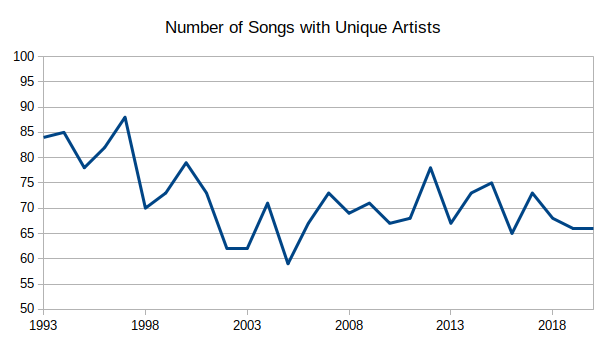

2021-01-23-Hottest100 Unique
It’s time for another round of fun facts about Triple J’s Hottest 100. Thank you to everyone who sent me questions, feel free to comment with more. There were naturally a lot of questions about the effect of Covid, but it was a bit difficult to pin it down to something easily measurable. However, I saw a comment on reddit whinging about the lack of diversity in this year’s countdown and how many more bands had multiple songs in the top 100. Now that’s something we can check.
Counting the number of bands isn’t as clear as you might think, due to collaborations and features. Consider, does this: 48. Aint’ it Different - Headie One, AJ Tracey, and Stormzy 94. Rain - Aitch and AJ Tracey featuring Tay Keith 97. Audacity - Stormzy featuring Headie One, namely three songs with five artists, make this year’s countdown more “diverse” or less than if there were three songs by three seaparte bands? And we can’t ignore this issue if we want to compare across years. In the first 5 years of the countdown there were just 8 collab’ing and feat’ing artists. In 2020 alone there were 26.
There doesn’t seem to be a best way to deal with this. What I went with is this - sort the songs of each year by number of collabs, least to most - once an artist appears, cross off any other songs with that artist - count the remaining songs

By this measure then, you can see that 2020 was not a year with noticably less music diversity.